Developer diaries
2026
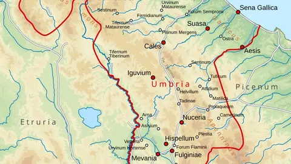
The Sarsinatesjottel · 2026-10-23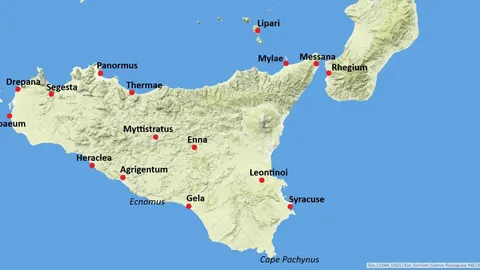
The Mamertinesjottel · 2026-10-13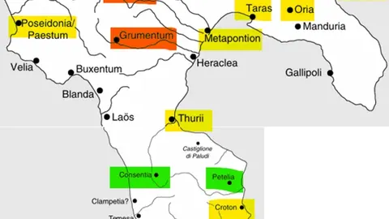
The Lucanians and Bruttiansjottel · 2026-10-10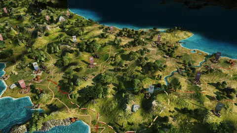
The Samnitesjottel · 2026-10-02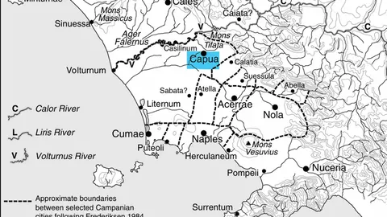
Capuajottel · 2026-09-25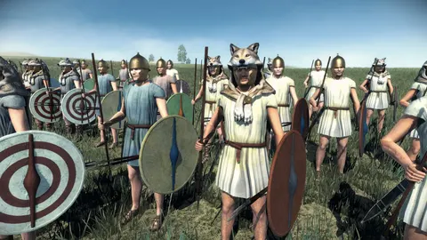
The Polybian reformsjottel · 2026-07-01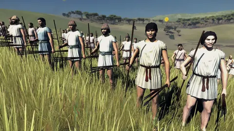
The early Roman Republic armyjottel · 2026-05-23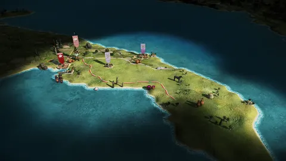
The Messapiansjottel · 2026-04-202025
2024
2023
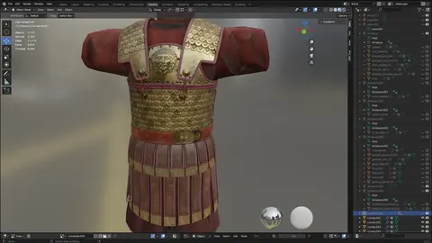
Christmas preview: Greek officerstony25931 · 2023-12-24 Native Anatolians, part 2: Cilicia and beyondTarnholm · 2023-09-09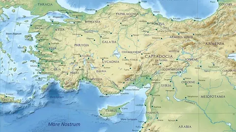
Native Anatolians, part 1Tarnholm · 2023-09-01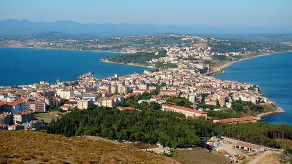
Minor Greeks 7: Sinope and Trapezousahowl11 · 2023-08-20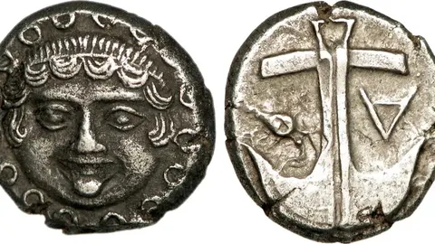
Minor Greeks 6: the Black Seaahowl11 · 2023-08-20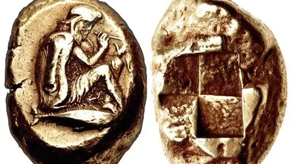
Minor Greeks 5: Ionia and western Asia Minorahowl11 · 2023-08-19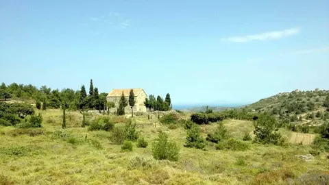
Minor Greeks 4: Chios and Creteahowl11 · 2023-08-18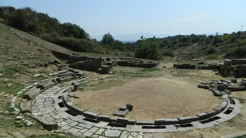
Minor Greeks 3: mainland GreeceTarnholm · 2023-08-17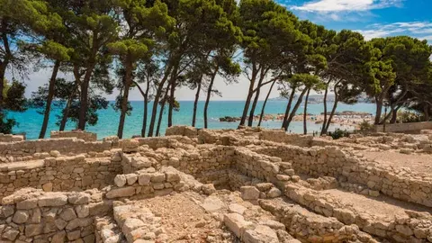
Minor Greeks 2: Emporion and the far westTarnholm · 2023-08-16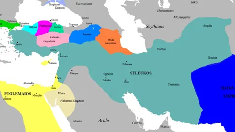
Minor Greeks 1: the Northern Leagueahowl11 · 2023-08-15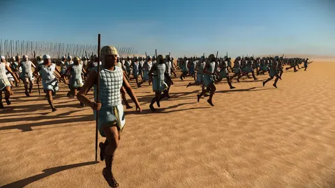
EgyptTarnholm · 2023-05-17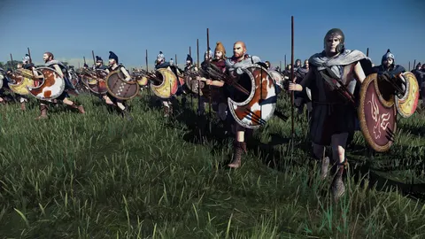
The OdrysiansTarnholm · 2023-05-02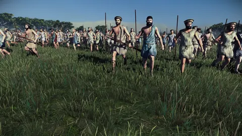
The Bithynian rosterTarnholm · 2023-02-01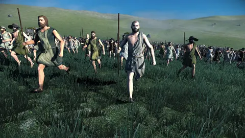
The Bosporan Kingdom unitsahowl11 · 2023-01-112022
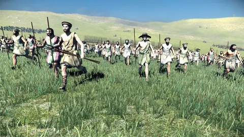
The Boeotian League unitsahowl11 · 2022-12-31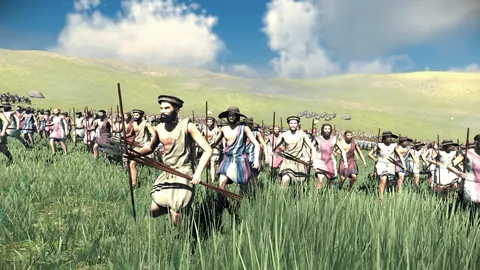
Rhodes unitsahowl11 · 2022-12-30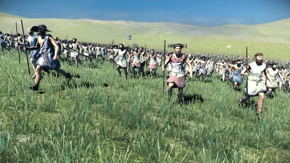
Syracuse unitsahowl11 · 2022-12-09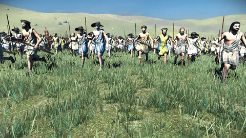
Athens and Spartaahowl11 · 2022-12-08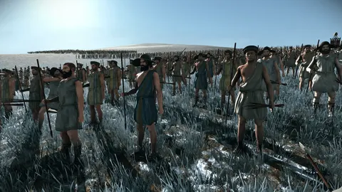
The Aetolian League unitsmoscaflaca · 2022-11-21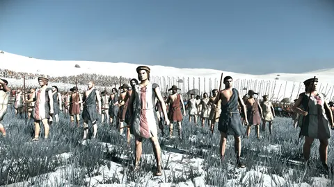
The Achaean League units in 0.6ahowl11 · 2022-11-19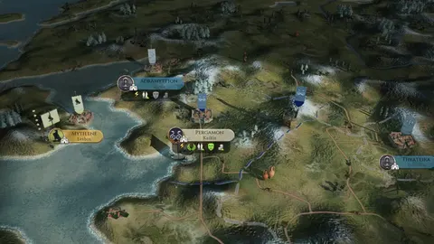
Pergamon and the last factions before 0.5.0Rex Basiliscus · 2022-09-30 Boii, Insubres and VolcaeRex Basiliscus · 2022-09-27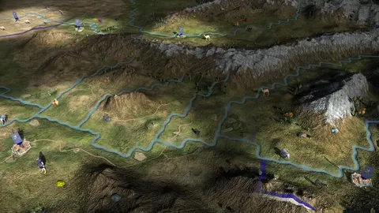
The far eastRex Basiliscus · 2022-09-22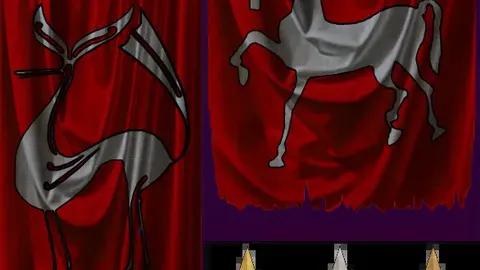
Gaul: Arverni, Aedui, Allobroges and BelgaeMaurits · 2022-09-19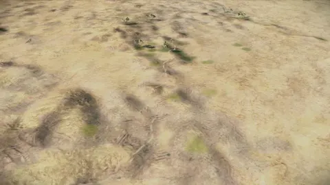
The Numidians: Massylii and MasaesyliiMaurits · 2022-09-17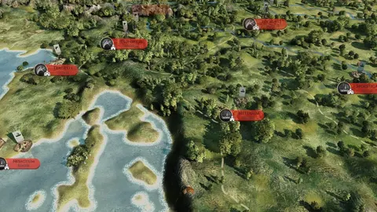
The Balkans: Ardiaei, Scordisci and TylisRex Basiliscus · 2022-09-16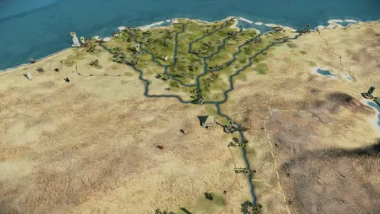
The Ptolemaic EmpireTarnholm · 2022-09-15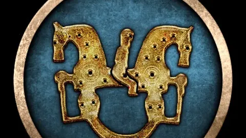
The Iberians: Arevaci, Edetani and LusitaniRex Basiliscus · 2022-09-14 The Germanic factions: Chatti, Cimbri and LugiiMaurits · 2022-09-13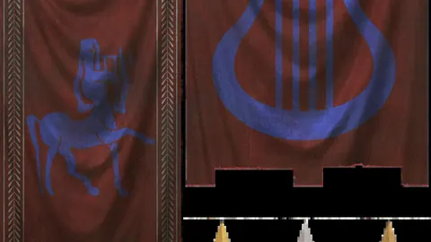
Bithynia, Cappadocia and Media AtropateneRex Basiliscus · 2022-09-12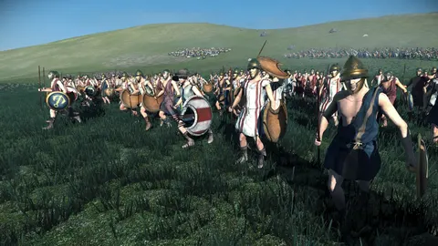
The Seleucid EmpireTarnholm · 2022-09-10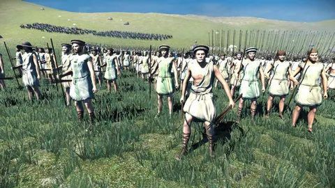
The Epirotes and the Antigonids in 0.5Tarnholm · 2022-09-06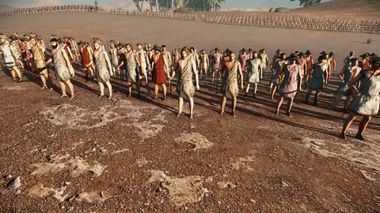
The remade units of 0.5Tarnholm · 2022-06-16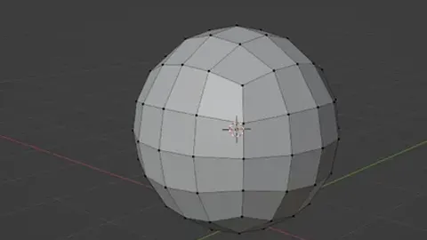
How the new units are made: helmets, baking and paintingtony25931 · 2022-03-05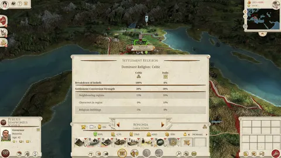
Cultures and new features in 0.4Tarnholm · 2022-02-26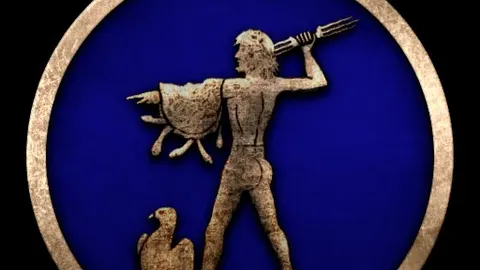
BaktriaRex Basiliscus · 2022-02-20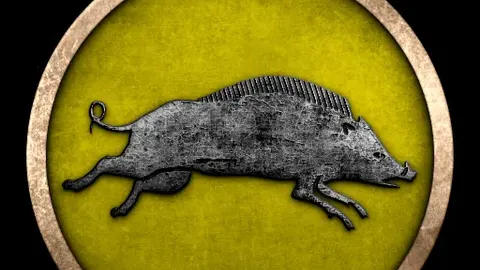
The Aetolian LeagueRex Basiliscus · 2022-02-19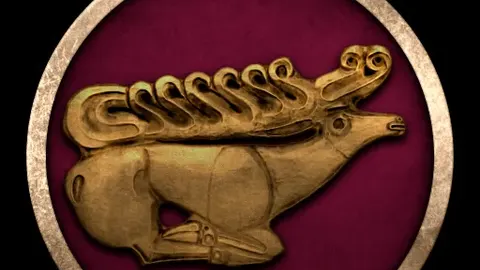
The SakaRex Basiliscus · 2022-02-18 The Achaean LeagueRex Basiliscus · 2022-02-16 MassaliaRex Basiliscus · 2022-02-14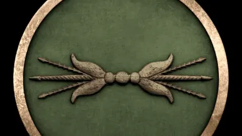
EpirusRex Basiliscus · 2022-02-13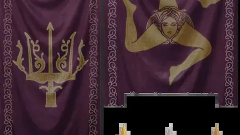
SyracuseTarnholm · 2022-02-08 RhodesRex Basiliscus · 2022-02-04 The Boeotian Leagueahowl11 · 2022-02-02 KyreneRex Basiliscus · 2022-01-30 AthensTarnholm · 2022-01-172021
The Bosporan KingdomMaurits · 2021-12-03
SpartaTarnholm · 2021-12-01
PergamonTarnholm · 2021-11-24
The GalatiansTarnholm · 2021-11-23
After 0.2.0: what comes nextTarnholm · 2021-10-29
The unique buildings of 0.2.0Tarnholm · 2021-10-29
A bit of everything before 0.2.0Tarnholm · 2021-10-29
Developer Diary 2: Greece on the new mapTarnholm · 2021-10-07
Developer Diary 1: Italy and the islands on the new mapTarnholm · 2021-10-07